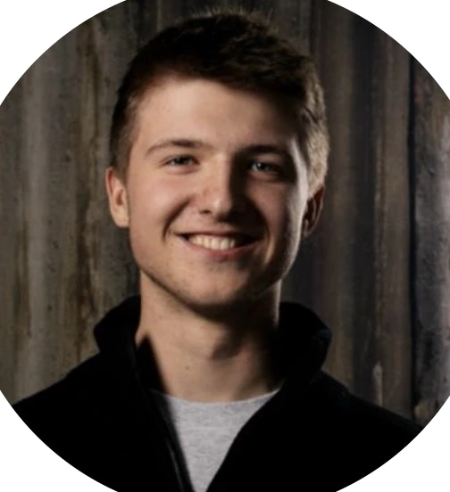
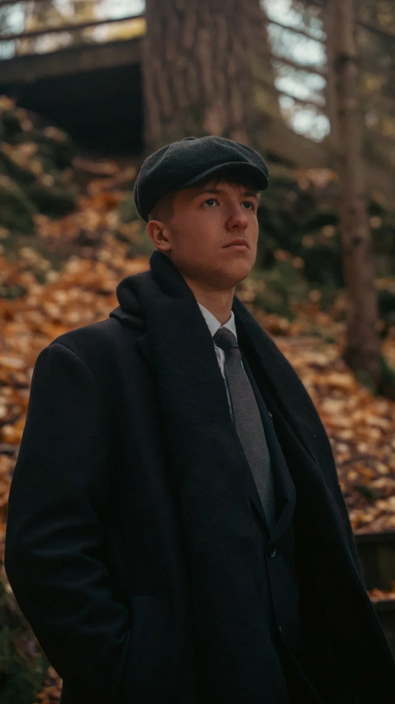
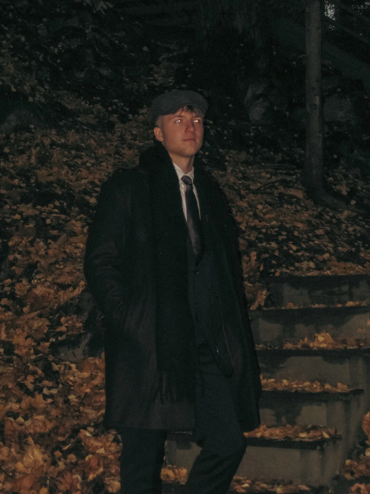

Photography
Portraits, animals, live performances and event coverage — finding the moment worth remembering.
BASED IN HAMAR, NORWAY
STUDENT & MEDIA PRODUCER
I'm a first-year Media Production student passionate about photography, filmmaking and telling real stories through visuals.

THE PORTFOLIO / 2026 & BEYOND
A selection of creative school projects, concert photography and real-world media experience.


A LITTLE ABOUT ME
I'm Gleb Diadiurenko, a first-year Media Production student based in Hamar, Norway. I moved here from Vang i Valdres, and I'm turning my curiosity for visual storytelling into hands-on experience.
I love photographing people, animals and live events, experimenting with camera techniques and discovering how a single frame can capture a moment.
I've worked photographing Oslo Motorshow and UKM concerts. Those experiences helped me grow in the field, communicate with different people and keep learning on the job.
My goal is to become a great specialist in media production — and one day pass what I've learned on to the next generation.
WHAT I BRING TO THE TABLE
Creative work is more than just pressing record. It's about noticing details, working with people and communicating an idea clearly.
Portraits, animals, live performances and event coverage — finding the moment worth remembering.
Filming with different techniques and editing footage into visual stories, primarily in DaVinci Resolve.
Designing brand ideas, album covers and visual work using tools such as Photoshop and After Effects.
Client communication, social media, marketing and sharing what I learn with others.
MOMENTS, CAPTURED
A few frames from Oslo Motorshow and live concerts. Click any image for a closer look.
LET'S MAKE SOMETHING
Have a project, a question or just want to connect? Reach out — I'm always interested in creative opportunities and new experiences.